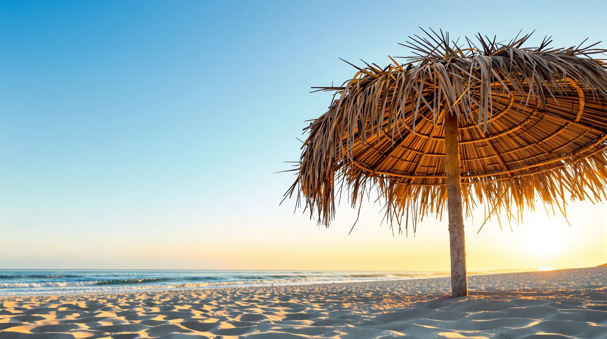

Si alguna vez has estado en la playa durante la bajamar, habrás notado cómo el océano parece rendirse. El agua retrocede decenas, a veces cientos de metros, dejando al descubierto arena mojada, rocas y un paisaje que parece temporalmente desolado.
En la vida, todos experimentamos nuestras propias mareas bajas. Temporadas en las que lo que antes era abundante se retira. Proyectos que se detienen, relaciones que se enfrían, negocios que dejan de crecer. La tentación es leer ese vacío como un final.
La marea baja no se lleva el mar. Solo lo mueve de lugar, y siempre vuelve.
Lo que queda al descubierto
Los pescadores de Las Glorias lo saben mejor que nadie: la bajamar no es un castigo, es información. Cuando el agua se retira, se ve el fondo. Se ven las piedras, los bancos de arena, los sitios donde conviene tirar la red cuando el agua regrese.
Las temporadas bajas cumplen la misma función. Enseñan qué sostiene realmente una operación cuando se van los clientes de paso, qué parte del equipo se queda, qué recetas siguen pidiendo los de siempre.
Y luego regresa
La marea siempre vuelve, y vuelve con fuerza. Trae consigo lo que estaba mar adentro. En nuestro caso, trae el camarón azul, el callo de hacha, el pulpo. La diferencia entre quien aprovecha ese regreso y quien lo deja pasar está en lo que hizo mientras el agua estaba baja.

En SAVE llevamos años trabajando con ese ritmo. Sabemos que hay meses en los que la pesca es generosa y otros en los que hay que esperar. Por eso nuestras piezas enteras se cotizan por kilo según lo que llegó ese día: porque respetar la marea es parte del oficio.
Si estás en tu propia bajamar, ordena el fondo. El agua regresa.